Service Events
Volunteering with food banks and hunger-relief organizations.
Lend a Hand
Upcoming Service Events
Members volunteer directly with food banks and similar organizations across Bryan-College Station. Here's what's coming up next.
No upcoming service events right now. Check back soon.
Past Service Events
Friday, 10/23: Three volunteers with carts full of bagged groceries Friday, 10/23: Packing snacks into boxes for pantry families Friday, 10/23: Bagging groceries at the sorting table Saturday, 9/26: cuddling a kitten at the Aggieland Humane Society A curious kitten greets us at the cage door A member meets one of the shelter kittens Playing with a kitten using a toy ball A member hugs a gray-and-white kitten The FFAC volunteer crew outside the shelter Group photo at the Brazos Valley Food Bank Stacking crates in the food repack room Repacking boxes on the line
Where we've been
OCT23
Bridge Ministry
Members volunteered at the Bridge Ministry food pantry, sorting food and bagging groceries for families in need.
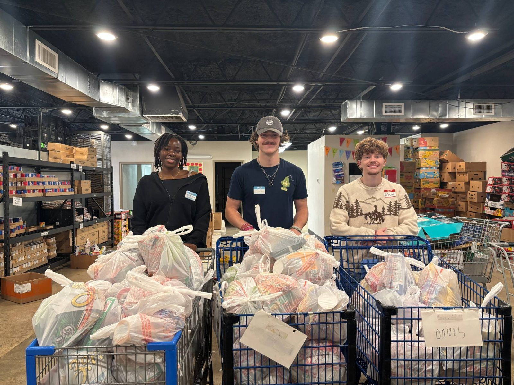
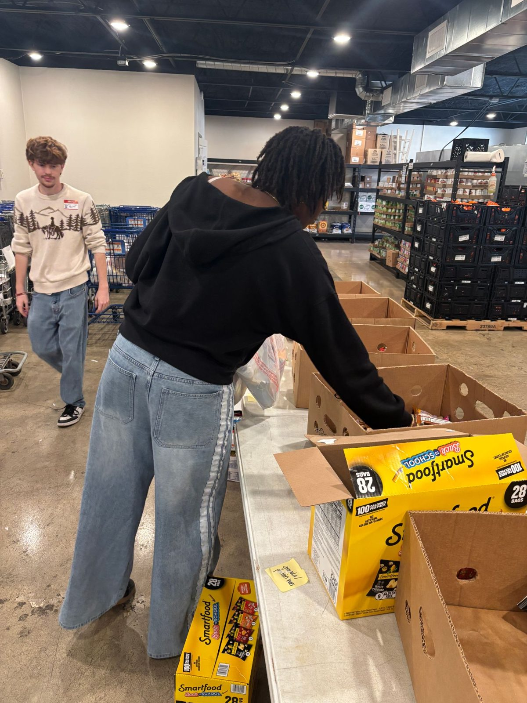
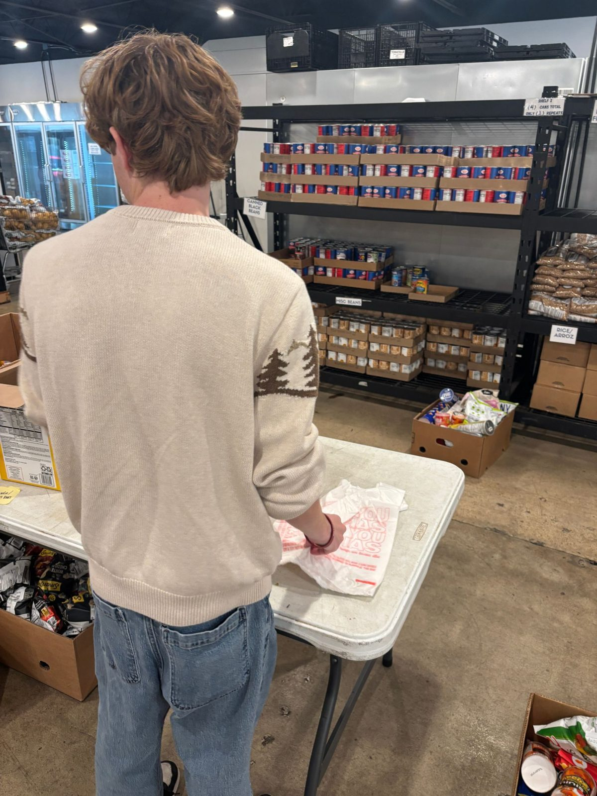
SEP26
Aggieland Humane Society
Our first service event of the semester: members donated their time to show the shelter's cats and dogs some Foodie love.
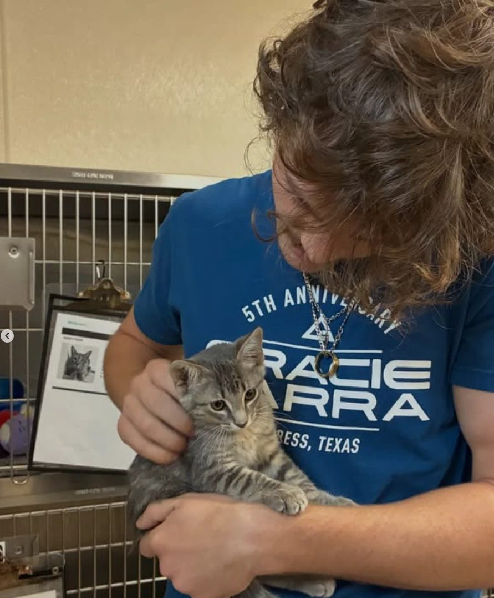
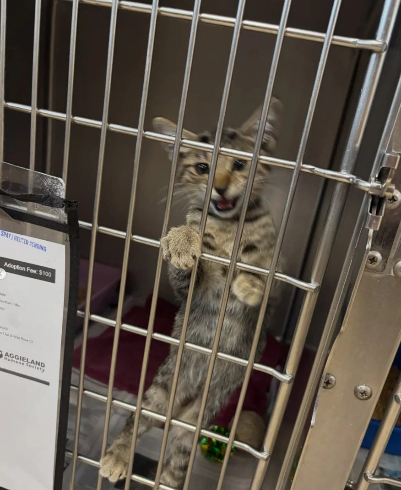
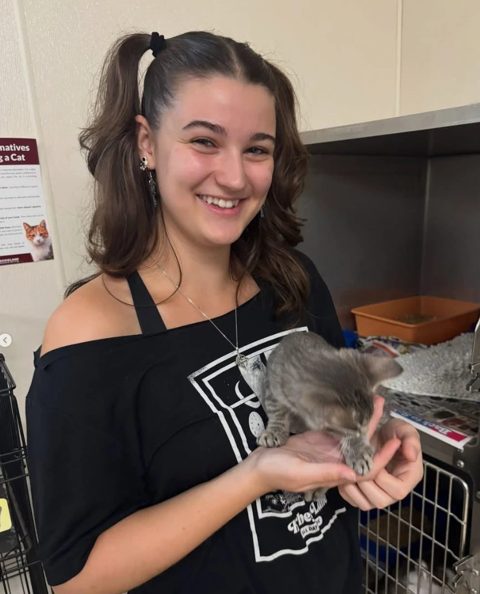
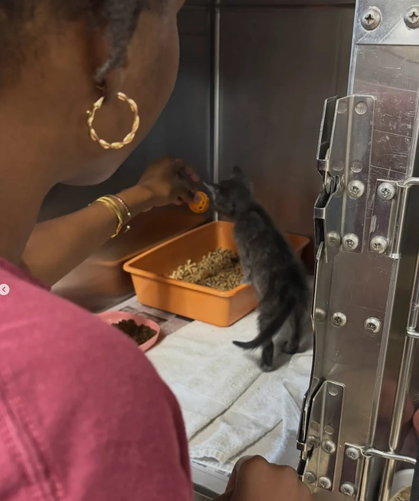
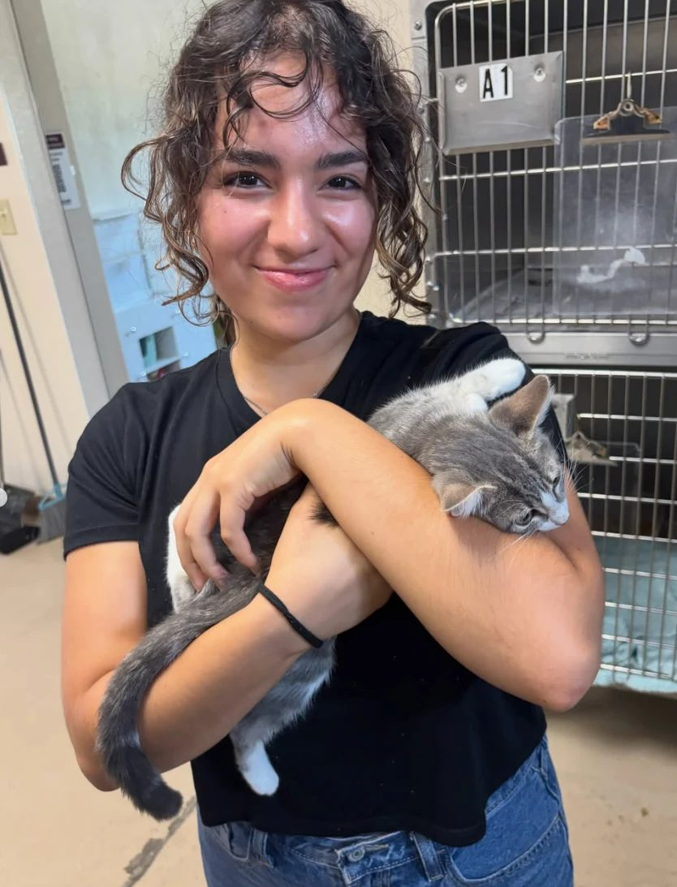
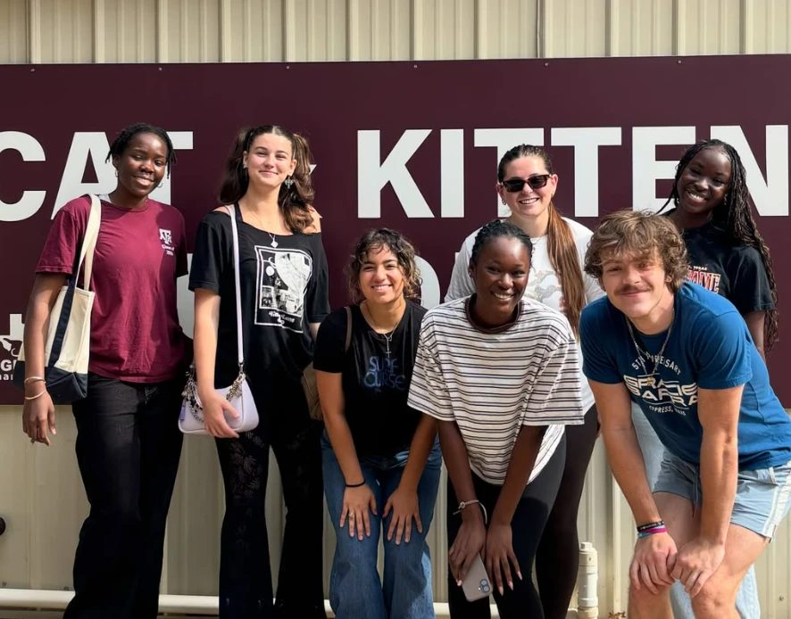
APR18
Brazos Valley Food Bank
Members volunteered in the food bank's repack room, sorting donations and packing boxes for families across the Brazos Valley.
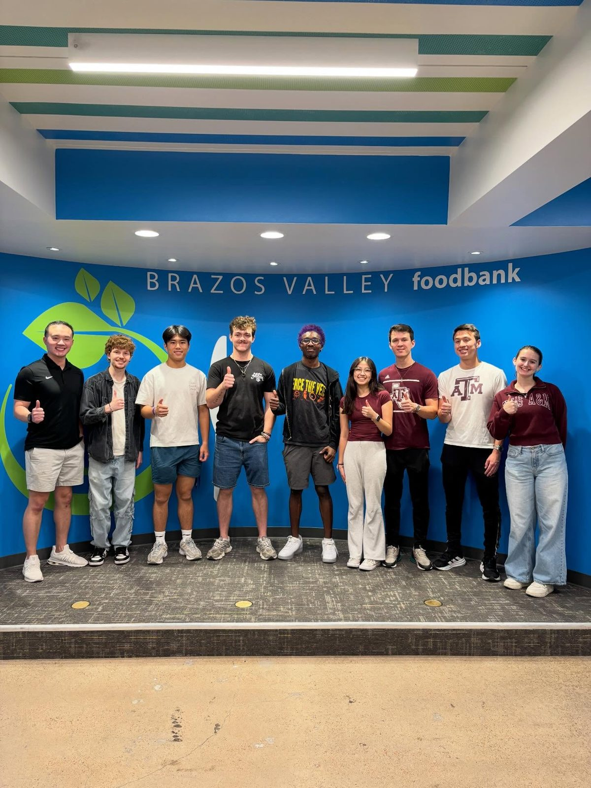
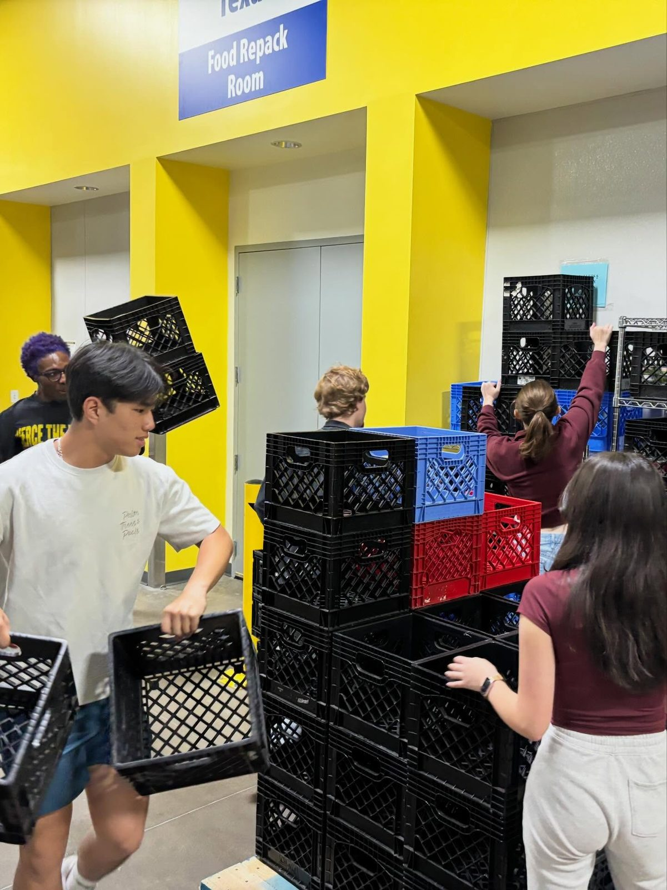
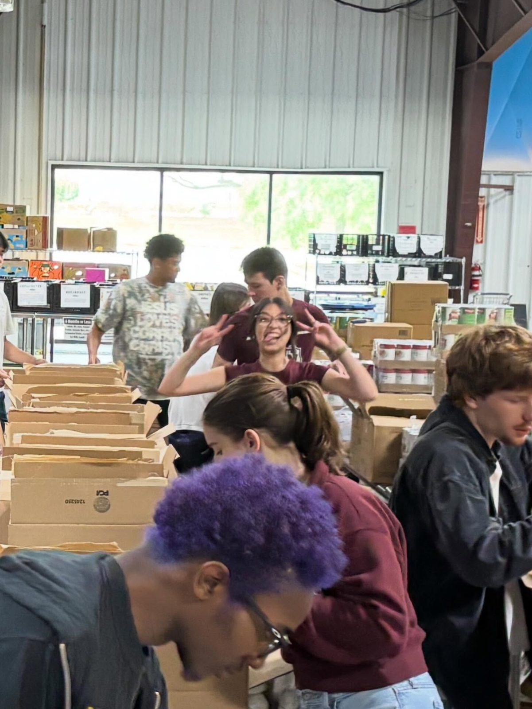